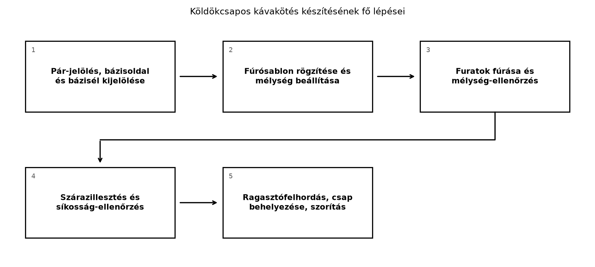

Ahogy egy konyhaszekrény oldallapját és polcát kell úgy összekapcsolni, hogy a lapok külső oldala tiszta maradjon, de a kötés mégis merev legyen, előbb-utóbb eljutsz az idegencsapos kávakötésekhez. A köldökcsap (néhol tipli) és a laposcsap (gyakran lamelló) nem látszó, rejtett csap, ezért a bútorlapon nincs takarandó csapvég, viszont a csapok megvezetik és megtartják a két alkatrészt. A hibát itt nem a csap látható része, hanem a rosszul elhelyezett furat vagy horony okozza: elcsúszik a lap, kidudorodik a szél, vagy éppen kilyukad a munkadarab.
Képzeld el, hogy egy 18 mm vastag, 300 mm széles bútorlap élhez kell erősítened egy másik lapot. A csapok kívülről nem látszanak. A két lapot pár-jelöléssel egymáshoz rendeled, a furatokat vagy hornyokat közös bázisoldalról méred, ragasztót viszel fel, majd szorítózod. Ha a furat csak fél mm-rel elcsúszik, a lapok élei már lépcsősek lesznek, ezért itt minden a sablonon, ütközőn és mélységhatárolón múlik.
Definíció. Az idegencsap olyan különálló, előre legyártott csap, amelyet a kötendő elemekbe fúrt vagy mart, ellendarabokból álló fészekbe ragasztunk. A faipari gyakorlatban az idegencsap lehet köldökcsap (hengeres, bordázott vagy sima palástú fatipli) vagy laposcsap (lamelló, félhold alakú préselt bükk vagy gyártói anyagú lapocska).
Definíció. A köldökcsapos kötés vakfuratba ragasztott hengeres fa- vagy műanyagcsap. A lamellós kötés ívpályán mart, félhold alakú horonyba helyezett laposcsapos kötés.
Megjegyzés. A köldökcsap és a tipli a műhelyi nyelvben gyakran ugyanazt a hengeres idegencsapot jelenti. A lamelló a laposcsap gyakori kereskedelmi neve. A pontos termékméretet és anyagot a gyártói adatlap adja meg (ellenőrizendő).
A bázisoldal és bázisél a megmunkálás viszonyítási felülete. A szakrajzon, az előrajzoláson és a sablonon mindig ugyanabból az oldalból/élből indulunk, így a párba tartozó alkatrészek furatai és hornyai egymáshoz illeszkednek. Ezt a korábban tanult „bázislap–bázisél” szabályt használjuk.
A köldökcsap átmérője, hossza és darabszáma a lap vastagságától, a terheléstől és a beépítési helytől függ. A következő arányok tanulási példák, nem tervezési előírások (ellenőrizendő: gyártói adatlap, aktuális szabvány vagy műszaki leírás):
Összefüggés. Egy vakfurat-párnál oldalankénti furatmélység:
ahol a csap teljes hossza, az egy oldalba fúrt mélység, ha a csap középhelyzetű és mindkét oldalba azonos mélységű furat fúrható (élbe–élbe kötésnél). Lapba–élbe kötésnél a furatmélységek aszimmetrikusak: a lapba fúrt furat , a másikba .
Példa. Ha , akkor . Ezt a fúrómélység-ütközőn ellenőrizhető próbadarabon állítsd be.
Számítás (köldökcsapok száma). A polc vagy a káva szélességén több csapot érdemes elhelyezni. A szélső csapok a szélektől kb. vagy 25–30 mm távolságra kerüljenek (tájékoztató). A közbülső csapok osztástávolsága kb. legyen.
Egyszerű, kerekítéses becslő képlet:
ahol a csapsor menti szélesség, a szélső távolság, az osztás. A kiszámolt értéket a munkadarab tényleges terheléséhez ésszel igazítsd.
Számítási példa.
Adott egy
széles polcél,
átmérőjű köldökcsap. Választás:
,
.
Keresett:
.
Tehát 6 db, -es csapot tervezünk, szélen 25–25 mm, közbül 50 mm osztással. Ellenőrzés: a szélső csap középvonala az éltől 25 mm-re, az utolsó a 275 mm-re van, a kiosztás szimmetrikus. ∎
Ha egy keskeny sarokvasalat alá csak 2 csap fér, válassz nagyobb átmérőt vagy hosszabb csapot, ne szaporítsd a csapot úgy, hogy a szélső furat közelebb kerül 15 mm-nél a szélhez, mert a perem könnyen kireped.
Az ábra a polc–oldallap kötést mutatja metszetben 18 mm-es lapokkal és 8 × 40 mm-es csappal: a lapba fúrt furat csak 12 mm mély, hogy legalább 5–6 mm maradékfal maradjon, a polc élébe fúrt furat a többi, 29 mm. Mellette a számítási példa csapkiosztása és a #20-as lamelló hornyának metszete látható. A HTML-változat kalkulátora a furatmélységeket, a maradékfalat és a csapszámot számolja.
A köldökcsapfuratot általában fúrógéppel készítjük: kézi fúrógéppel, oszlopos fúrógéppel, sorozatfúróval vagy köldökcsapfúró hosszlyukfúró adapterrel. A bútoripari sorozatfúró feje a 32 mm-es raszter szerint több furatot készít egyszerre; ezt részletesen a Fúrógépek: hosszlyukfúró, sorozatfúró, 32-es rendszer és szerelvényhelyek alfejezetnél tanuljuk. Itt a fúrósablonnal és kézi fúrógéppel készülő kötésre koncentrálunk.
Definíció. A fúrósablon olyan pozicionáló segédeszköz, amely a fúrót vagy a fúróperselyt a bázisfelülethez képest mindig ugyanoda vezeti. Lehet bolti, lyukazott létrás sablon, vagy műhelyben készített, edzett perselyes léc.
Szabály. A furat helyét a sablonon mindig a bázisoldaltól és a báziséltől mérd. A sablonhoz a munkadarabot ugyanazzal a bázisoldalával szorítsd, mint a rajzon szerepel.
A mélységhatároló (mélységi ütköző) a fúrón állítható gyűrű vagy a furatmélységhez erősített ütköző. Ha nincs, használj szigetelőszalag-tekercset a fúrószár köré, de ez csak gyakorló módszer; pontos sorozatnál használj állítható mélységi ütközőt.
A köldökcsapfúró hengeres, központosító hegyű fafúró, vagy speciális köldökcsapfúró. A fúró átmérője pontosan a csap átmérőjével azonos legyen. A gyorsacél fúrók alkalmasak tömörfához és lapanyaghoz; a keményfához éles, megfelelően szögelt fúrót válassz. A megengedett fordulatszámot a fúró és a fúrógép gyártója adja meg (ellenőrizendő: gépkönyv).
Eljárás. Köldökcsapos kávakötés készítése fúrósablonnal:
Figyelem. A csapot ne üsd be erővel ütközésig, mert a túlfolyó ragasztó hidraulikus nyomása szétvetheti a lapot. A furat aljára hagyj 1–2 mm hézagot.

A lamellózó gép (laposcsap-marógép) félhold alakú, 4 mm széles hornyot mar. A horony hossza a lamelló hosszánál kissé nagyobb, mélysége a lamelló szélességéhez igazodik (a gép a lamelló méretjelének megfelelő ütközővel állítja be). A gyakori bútoripari lamellóméretek: #0, #10, #20, néhol #6 is. A pontos méret gyártónként eltérhet (ellenőrizendő: gyártói adatlap).
Szabály. A lamelló középvonalát az alkatrész szélétől úgy kell elhelyezni, hogy a külső fal vastagsága legalább 4–5 mm maradjon, de a lamelló ne kerüljön túl belülre, mert akkor nem vezet. A horony mélysége kb. a lamelló szélességének fele + 1 mm legyen (ellenőrizendő: gépkönyv); a horony hossza a lamelló hosszánál néhány mm-rel nagyobb, így a lamelló oldalirányban igazítható.
Számítási példa (lamellóhorony).
Adott: #20-as lamelló, hossza
,
szélessége
(mintaadat, ellenőrizendő: gépkönyv, gyártói adat).
Keresett: oldalankénti horonymélység
.
Tehát a gépen kb. 12,5 mm mély hornyot kell maratni oldalanként. Ellenőrzés: a két horony együtt 25 mm, a lamelló 23 mm széles, így 2 mm hézag marad. ∎
Megjegyzés. A lamelló a horonyba a keskeny méretével (szélességével) merül be, ezért a szélessége határozza meg a horony mélységét; a horony hossza a lamelló hosszánál (56 mm) kissé nagyobb. A lamelló vastagsága préselt bükkből kb. 4 mm, így a gép 4 mm-es marótárcsával dolgozik.
A laposcsap-marógép kezelésekor a gépet mindig a munkadarabra ütköztetve, bázisélhez képest vezesd. A beépített, állítható szögű ütközővel sarok-, T- és síkbeli kötést is készíthetsz. A munkadarabot szorítóval rögzítjük (kis darabot sosem tartunk kézzel). A gépet két kézzel fogva az ütközőt a bázislapra/bázisélre fektetjük, egyenletesen bemerítjük, majd a tárcsa visszahúzódása után emeljük el. A kéz sose kerüljön a gép homloklapja elé. Az elszívást csatlakoztatjuk (ellenőrizendő: gépkönyv).
Az idegencsapos kötés ragasztott kötés. A ragasztóanyag kiválasztása a felhasználás helyétől függ: beltéri bútorhoz D2, nedves helyre D3, kültéri, gyakran nedvesedő szerkezethez D4 vízállósági osztályú ragasztó szükséges az MSZ EN 204 szerint (ellenőrizendő a jelölés pontos szövege). A ragasztó felhordása előtt a furat és a csap felülete legyen tiszta, pormentes.
A felhordás történhet kefével, ragasztópalackkal vagy applikátorral. A furat belső palástját és a csap palástját egyaránt vékonyan, egyenletesen kend be. A felesleges ragasztót azonnal töröld le, mert a megszáradt film a felületkezelés előtt csiszolási hibát okoz.
A szorítás igazodjon a kötés geometriájához. Sarokkötésnél használj sarokszorítót, hosszú káva esetén táblásításhoz hosszú szorítót. A szorítónyomás legyen egyenletes, ne feszítsd túl, mert a bútorlap éle benyomódhat. A préselési idő a ragasztó műszaki adatlapján szerepel (ellenőrizendő).
Technológiai lap. Cél: 300×300 mm méretű, 18 mm vastag bútorlapból készült polc csatlakoztatása két oldallaphoz köldökcsapokkal.
Lépések:
Dokumentálás: munkanaplóba írd fel a beállított furatmélységet, a fúróátmérőt, a csap hosszát, a ragasztó típusát és a préselési időt; hibajelenséget fényképezz.
Ellenőrizd a furatmélységet mérőtolóval vagy tüske-mélységmérővel. A furat ne legyen átmenő: a maradék falvastagság legalább 4–5 mm legyen a külső oldalig. A csapméret ellenőrzése: a csap átmérője a furatba könnyen, de nem lötyögve illeszkedjen; a bútoripari illesztésnél 0,1–0,2 mm játék megengedett a ragasztó beférkőzéséhez (tájékoztató, ellenőrizendő). A kötésvonal húzódjon egymáson, a külső oldalak síkban legyenek; a derékszöget átlóméréssel ellenőrizd. Ha a felület eltér, szorítózás közben igazítsd, és a szorítót megfelelően állítsd be.
Elcsúszott furat. A fúrósablon megcsúszott, a bázisoldalt nem azonos oldalról vettük, vagy a fúró hegye a ferde élről elvitte a furatot. A csapok összerántáskor feszítenek, a lapok élei nem egy vonalban állnak. Helyes gyakorlat: a sablont mindig szorítóval rögzítsd, fúrás előtt előhegyezz (középpontos fúróval), és a pár-jelölést ne hagyd el.
Túl mély furat. A mélységi ütköző lecsúszott, vagy nem is volt beállítva. A csap a furat aljára ül, a ragasztó nem fér el, a csap kilazul; rosszabb esetben átmenő furat lesz. Helyes gyakorlat: mindig próbadarabon állíts furatmélységet, és a fúrón lévő mélységi ütközőt ellenőrizd.
Kilyukadás a külső oldalon. A csap túl hosszú a vakfurathoz, vagy a furatot a vékony alkatrész rossz oldaláról fúrtuk. A külső oldalon kidudorodik vagy kiszakad a fúróhegy. Helyes gyakorlat: a csap hosszát és a furatmélységet oldalanként ellenőrizd; a fúrási oldalt a rajzon és a párjelölésen rögzítsd.
Ragasztóhiány vagy ragasztódugó. A furatot nem kentük be, vagy a csapot teljesen beütöttük, és a ragasztó a furat alján összegyűlt. A kötés gyenge, a csap ki tud húzódni. Helyes gyakorlat: a ragasztót vékonyan, a furat palástjára is vidd fel; a csapot ne üsd fenékig, hagyj 1–2 mm hézagot.
Egy tanulóműhelyben konyhai polcrendszert gyártottak 18 mm-es MDF lapból, köldökcsapos rögzítéssel. A darabok szárazillesztés nélkül kerültek ragasztásra, és a fúrósablont csak az egyik végén szorították le. A polc behelyezésekor az egyik csap ferdén ült, a lapok élén 1 mm-es lépcső keletkezett. A hiba oka a sablon elfordulása volt, amelyet a szárazillesztéskor azonnal látni lehetett volna. A javítás: a hibás furatot 10 mm-esre felfúrták, majd 10 mm-es köldökcsapot ragasztottak be (ez erősített javítás), de a munkadarabot újra kellett szabni, mert a bútorlapon maradt a korábbi furatnyílás. A tanulság: próbadarab, szárazillesztés és pár-jelölés nélkül idegencsapos kötést ne ragaszz.
1. feladat (A). Határozd meg egy 16 mm vastag bútorlaphoz ajánlott köldökcsap-átmérő tartományát a tájékoztató szabály szerint. Számold ki, mekkora furatmélység kell oldalanként egy 35 mm hosszú csaphoz.
2. feladat (A). Rajzold le szövegesen egy 250 mm széles, 18 mm vastag polcél köldökcsap-kiosztását: 8 mm-es csap, szélső távolság 25 mm, osztás 50 mm. Hány csap fér el?
3. feladat (B). Egy asztalos sarokkötéshez #20-as lamellót használ. A lamelló hossza , szélessége , vastagsága (mintaadatok). Számítsd ki az oldalankénti horonymélységet. Miért hosszabb a horony a lamelló hosszánál?
4. feladat (B). Egy köldökcsapos kötésnél a rajz szerint a csap , a munkadarab vastagsága . A furatmélység oldalanként 18 mm lett, a csap hossza 40 mm. Mi a hiba ebben a méretezésben? Javítsd ki a furatmélységet, ha a csap hosszát megtartjuk.
5. feladat (C). Tervezz meg egy 400 mm széles, 18 mm vastag polclap élhez való köldökcsap-kiosztást, ha a csap átmérője 8 mm, a szélső távolság minimum 20 mm, a legnagyobb osztás 60 mm. Add meg a csapok számát, a szélső távolságokat és az osztást. Indokold a választásod.
6. feladat (D). Készíts technológiai lépéssort egy 18 mm-es bútorlapból álló kis doboz sarokkötéséhez lamellóval. Sorold fel az ellenőrzési pontokat, a szükséges gépeket/szerszámokat és a Gépbiztonság legfontosabb mondatát.
Önellenőrzés – válaszok
1. feladat. A vastagság 16 mm, ajánlott átmérő mm, tehát kb. . Merevebb polchoz válassz 8 mm-t. A furatmélység ; gyakorlatban 18,5–19 mm. Ellenőrzés: a csap 35 mm, két oldalon 18,5+18,5 = 37 mm, tehát 2 mm hézag marad. ∎
2. feladat. A szélesség 250 mm, e = 25 mm, t = 50 mm, d = 8 mm. A szélső furatok tengelytávolsága 25 mm az éltől. A mm helyeken 5 csap fér el. Képlettel: . Ellenőrzés: 25+4×50+25 = 250, szimmetrikus. ∎
3. feladat. horonymélység oldalanként. A horony hosszát a gép a lamelló hosszánál néhány mm-rel nagyobbra mar, hogy a lamelló oldalirányban igazítható legyen, és a ragasztó el tudjon oszolni. Ellenőrzés: a két horony együtt 25 mm, a lamelló szélessége 23 mm, így 2 mm hézag marad. ∎
4. feladat. A csap hossza 40 mm, a furatmélység oldalanként 18 mm. A csap fele 20 mm, tehát oldalanként legalább 20+1 = 21 mm furatmélység kellene. A megadott 18 mm-nél a csap nem fér be teljesen, vagy a ragasztónak nincs hely. Helyes: . Ellenőrzés: 21+21=42 mm teljes mélység, a csap 40 mm, így 2 mm hézag. ∎
5. feladat. Egy lehetséges megoldás: d = 8 mm, e = 24 mm, t = 56 mm. csap. A tengelyek: 24, 80, 136, 192, 248, 304, 360 mm. A szélső távolság 24 mm, az utolsótól a másik széléig 40 mm, tehát a sor nem teljesen szimmetrikus. Szimmetrikussá tehető e = 32 mm választással: , a szélső 32 mm, az utolsótól 32 mm. Indoklás: a szélső furat ne legyen 20 mm-nél közelebb, a t = 56 mm kényelmes, a csapok jól elosztják a terhelést. ∎
6. feladat. Technológiai lépések: (1) ellenőrizd a rajzot, jelöld a bázisoldalakat; (2) állítsd be a lamellózógép horonymélységét és szögét; (3) marj hornyot az egyik alkatrész élébe, ütközővel; (4) marj hornyot a pár darabba, ugyanabból a bázisból; (5) szárazillesztés: a lamelló helyezd be, ellenőrizd a derékszöget; (6) ragasztófelhordás a horonyba és a lamellóra; (7) szereld össze, szorítsd meg; (8) töröld le a ragasztót, ellenőrizd a síkosságot. Gépek/szerszámok: lamellózó, szorító, derékszögelő, mérőeszköz, ragasztó. Gépbiztonság: a gépet csak betanított, felügyelt tanuló használja; kesztyűt ne viselj; a munkadarabot rögzítsd; a szerszámot csak áramtalanított gépen cseréld; viselj védőszemüveget és légzésvédőt.
Az idegencsapos kávakötés különálló csapot, köldökcsapot vagy laposcsapot (lamellót) használ. A köldökcsap hengeres, vakfuratba ragasztott elem, a lamelló félhold alakú horonyba illeszkedő préselt lapocska. A fúrás és a marás pontossága a bázisoldal, bázisél és pár-jelölés következetes használatán múlik. A fúrósablon a fúrót mindig azonos helyre vezeti, a mélységhatároló a furatmélységet állítja. A csapátmérő tájékoztató szabálya: a vékonyabb alkatrész vastagságának -e, legalább 6 mm; furatmélység oldalanként , ahol a csap hossza. A lamellóhorony mélysége , ahol a lamelló szélessége; a horony hossza a lamelló hosszánál kissé nagyobb. A ragasztás előtt kötelező a szárazillesztés: ellenőrizd a síkbeliséget és a derékszöget átlóméréssel. A ragasztót a furat palástjára és a csapra is vidd fel, a csapot ne üsd fenékig. A gyakori hibák: elcsúszott furat, túl mély furat, kilyukadás. Továbbvitt eredmény: ezt az elvet használjuk a Fúrógépek: hosszlyukfúró, sorozatfúró, 32-es rendszer és szerelvényhelyek gépeinél, a Idegencsapos és ragasztott szerkezetek szerelése; szorítóeszközök és prések és az Egyszerű munkadarabok: tervezés, kivitelezés, önértékelés csapozásainál.
Forrástípusok: faipari szakkönyvek az idegencsapos kötésekről, fúrógép- és lamellózógép gépkönyvek, ragasztógyártók műszaki adatlapjai, MSZ EN 204 ragasztó-vízállósági osztályok, faipari gépek biztonságára vonatkozó MSZ EN ISO 19085 sorozat. Ellenőrizendő: a konkrét csap- és lamellóméretek (a gyártók katalógusai eltérhetnek), a ragasztópréselési idők, a D1–D4 osztályok pontos jelölése, a marógépek beállítási paraméterei, valamint a bútoripari tűrések. A számításokban szereplő méret- és arányadatok tanulási példák.